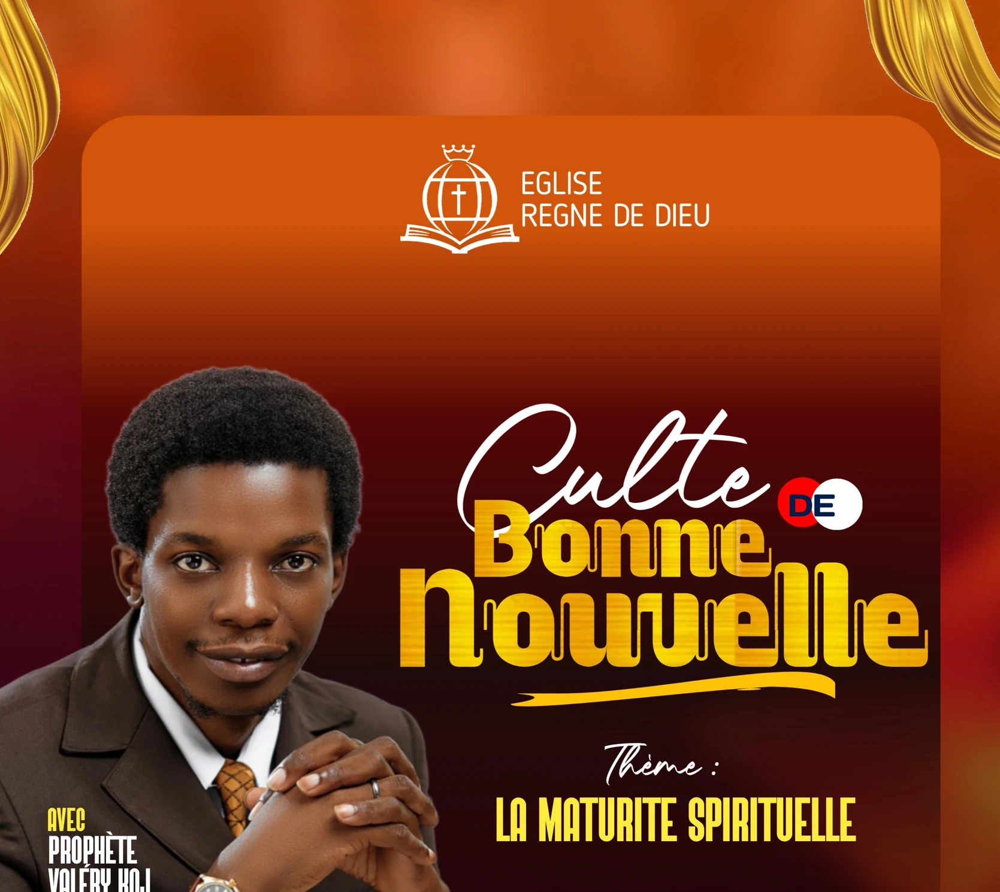
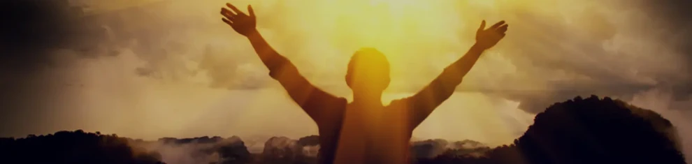
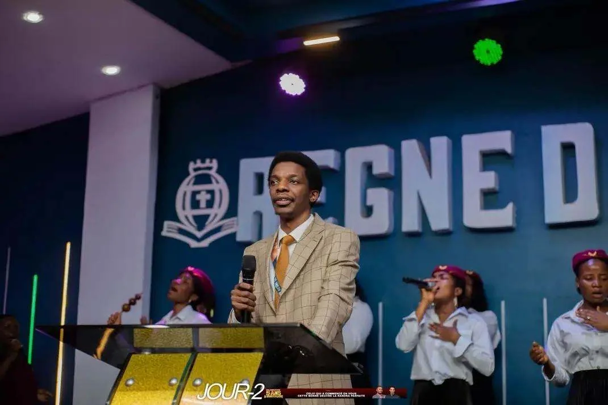
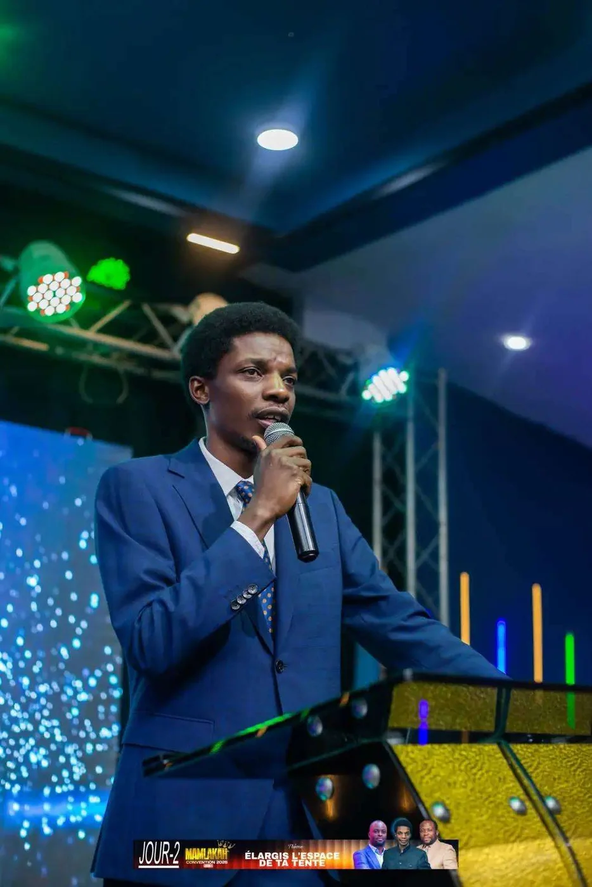
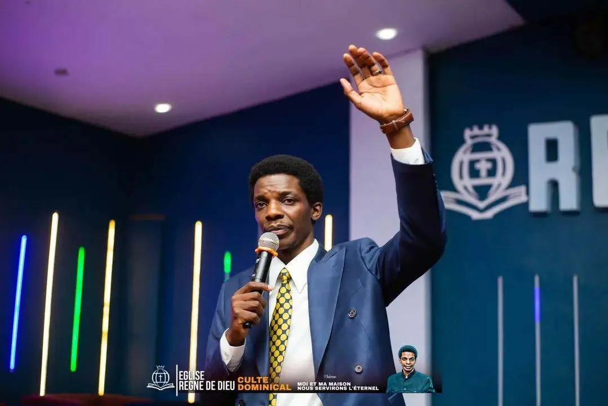

Nos rencontres
Des temps de prière, d’enseignement et de partage
Retrouvons-nous pour grandir ensemble dans la foi et vivre la fraternité.
Le culte en ligne
Vivre le culte, où que vous soyez.
Le plein écran n’est pas disponible ici. Utilisez la commande du lecteur YouTube.
Le lecteur est fourni par YouTube. La connexion à YouTube s’établit lorsque la vidéo apparaît à l’écran.
Cette semaine
Les cultes de l’église
Les horaires peuvent évoluer. Pour éviter tout déplacement inutile, contactez-nous avant votre venue.

Le culte dominical
Un rendez-vous de célébration, d’adoration et de bonne nouvelle.
Le culte dominical est le grand rassemblement hebdomadaire de la famille de Dieu. C’est un moment de louange, d’adoration, de communion fraternelle et de proclamation de l’Évangile de Jésus-Christ.
À travers la prédication de la Parole, les chants et la prière, chaque participant est invité à rencontrer Dieu, à renouveler son espérance et à recevoir les enseignements nécessaires pour vivre une vie qui l’honore.
Le culte d’enseignement
Un rendez-vous pour grandir dans la connaissance de la Parole de Dieu.
Le culte d’enseignement est un moment consacré à l’étude approfondie des Écritures afin d’aider chaque croyant à mieux connaître Dieu, à comprendre sa volonté et à mettre en pratique ses principes dans sa vie quotidienne. Il vise à affermir la foi, à renouveler l’intelligence et à former des disciples mûrs, capables de vivre selon la Parole de Dieu.

Jeudi Mungu Anaweza
Un rendez-vous avec le Dieu de l’impossible.
Jeudi Mungu Anaweza est un programme consacré à la prière, à la délivrance, à la guérison et aux services prophétiques. C’est un temps de recherche intense de la présence de Dieu, au cours duquel les fidèles sont encouragés à présenter leurs besoins au Seigneur, à rechercher sa direction et à s’attendre à son intervention dans leur vie.
Ce programme met l’accent sur la puissance de la prière, la liberté en Jésus-Christ, la restauration et la foi en un Dieu capable d’agir au-delà des limites humaines.
Décompte calculé selon les horaires publiés du dimanche à 9 h et du mardi et jeudi à 17 h (heure de Kolwezi, UTC+2).
Le rendez-vous du dimanche
Un temps de foi partagé
Louange, prière et enseignement biblique rythment la célébration dominicale.



Les messages de l’église
Revoir les cultes précédents
Retrouvez les prédications et les célébrations sur la chaîne Prophète Valéry Koj TV.
Voir cette vidéo sur YouTube